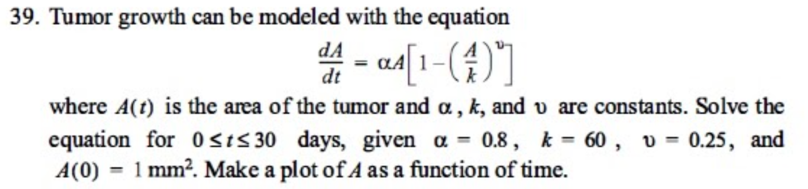

Ejercicio 2: Crecimiento del tumor
El crecimiento de un tumor puede modelarse con la siguiente ecuación:
$$ \frac{dA}{dt} = \alpha A \left[ 1 - \left( \frac{A}{k} \right)^{\nu} \right] $$
donde \( A(t) \) representa el área del tumor y \( \alpha, k, \nu \) son constantes.
Resolver para \( 0 \leq t \leq 30 \) días con los valores:
\( \alpha = 0.8 \),
\( k = 60 \),
\( \nu = 0.25 \),
\( A(0) = 1 \, \text{mm}^2 \)
Haz una gráfica de \( A \) en función del tiempo.
Ver tabla de resultados
Gráfico del área del tumor
Conclusiones
- El modelo de crecimiento del tumor propuesto refleja un comportamiento logístico modificado, donde el crecimiento se desacelera a medida que el área del tumor se aproxima a un límite fisiológico determinado por los parámetros \( k \) y \( \nu \).
- El método de Runge-Kutta de cuarto orden (RK4) proporciona resultados más precisos y suaves en comparación con el método de Heun, especialmente en etapas donde el crecimiento del área es más pronunciado.
- Ambos métodos numéricos son válidos y convergen hacia la misma solución general, pero RK4 es superior cuando se requiere una mayor fidelidad en la estimación con pasos moderados o grandes.
- El método de Heun es más sencillo de implementar y computacionalmente más liviano, pero puede presentar una ligera subestimación o sobreestimación del crecimiento en regiones no lineales.
- En problemas reales como el crecimiento tumoral, donde la dinámica puede ser compleja, se recomienda utilizar RK4 para obtener simulaciones más robustas cuando se disponga de recursos computacionales adecuados.